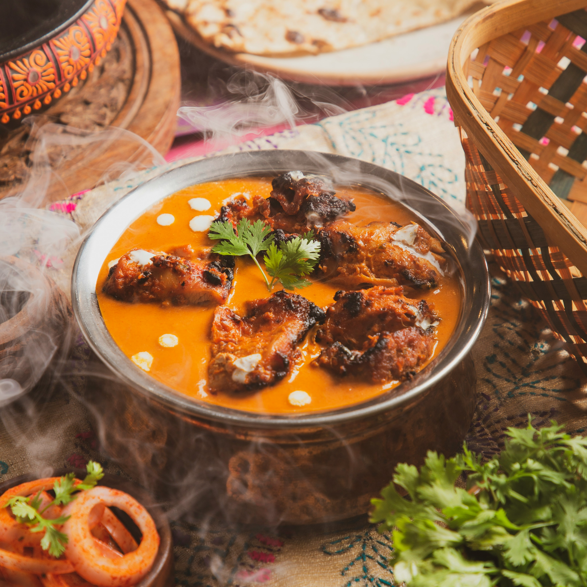

Chicken

Description
A popular Indian dish featuring chicken cooked in a spiced tomato and butter-based gravy.
Ingredients
- 1 ¾ pounds skinless, boneless chicken breast halves - cubed
- 3 tablespoons lemon juice, divided
- 2 tablespoons chili powder, divided
- salt to taste
- 1 cup yogurt
- 2 tablespoons olive oil
- 2 tablespoons ginger paste
- 2 tablespoons melted butter
- 1 ½ teaspoons garam masala
- salt to taste
Steps
- Make marinade: Place chicken in a nonporous glass dish or bowl. Add 1 tablespoon lemon juice, 1 tablespoon chili powder, and salt; stir to evenly coat chicken. Cover the dish and let marinate in the refrigerator for about 1 hour.
- Line a strainer with cheesecloth. Place yogurt in the strainer and allow it to drain for 15 to 20 minutes. Transfer drained yogurt to a medium bowl. Mix remaining 2 tablespoons lemon juice, oil, garlic paste, ginger paste, melted butter, remaining 1 tablespoon chili powder, and garam masala into yogurt until well combined. Pour yogurt mixture over chicken, cover the dish, and refrigerate once more to marinate for 3 to 4 hours.
- Preheat the oven to 400 degrees F (200 degrees C).
- Place chicken on skewers; arrange in a 9x13-inch baking dish.
- Bake in the preheated oven until almost cooked through, about 20 minutes.
- Make sauce: Melt butter in a medium saucepan over medium heat. Stir in garam masala. When masala begins to crackle, mix in ginger paste, garlic, and green chile pepper. Sauté until tender, 2 to 3 minutes; stir in tomato purée, water, chili powder, and salt. Bring to a boil; reduce heat to low and simmer, stirring in honey and fenugreek.
- Remove par-cooked chicken from skewers and place into sauce in the pan. Continue cooking until chicken is no longer pink inside, about 5 minutes. An instant-read thermometer inserted into the center should read at least 165 degrees F (74 degrees C). Stir in cream until incorporated.
Home